Every map here is one call on the bundled snapshot, offline. Each
carries its coverage and source in the caption, alt text from
map_alt_text(), and a provenance record from
map_provenance().
Choropleths
world_map(poly, gdp_per_capita)
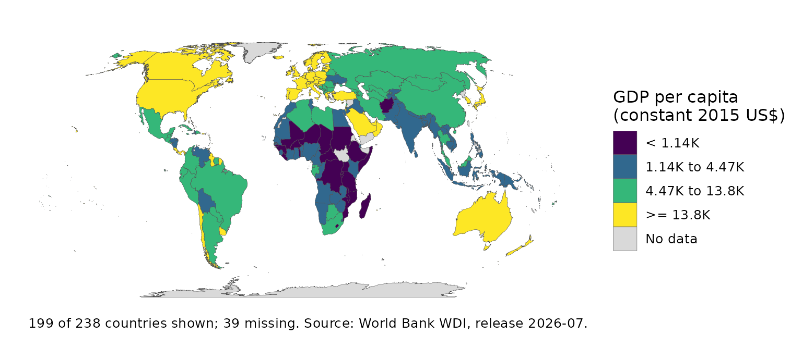
world_map(poly, income)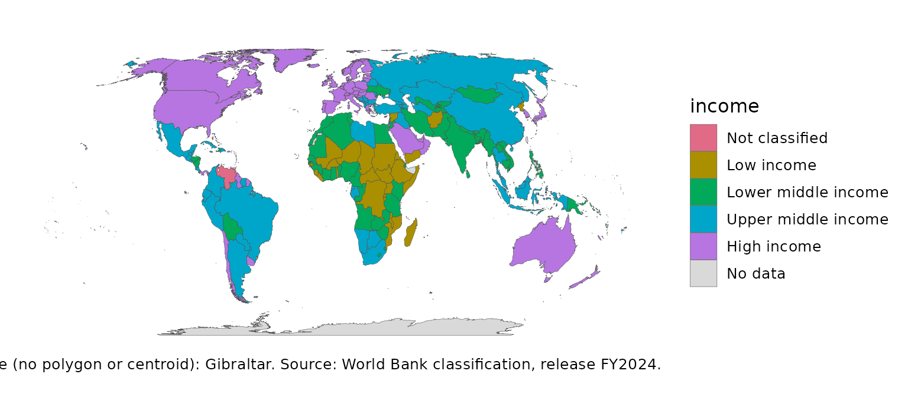
world_map(poly, gdp_per_capita, recenter = 150)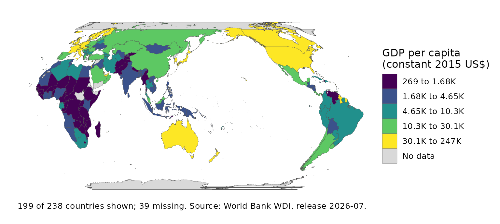
set.seed(1)
mix <- transform(snap, farm = runif(nrow(snap), 1, 4),
industry = runif(nrow(snap), 2, 6),
services = runif(nrow(snap), 4, 9))
ternary_map(attach_geometry(mix), farm, industry, services)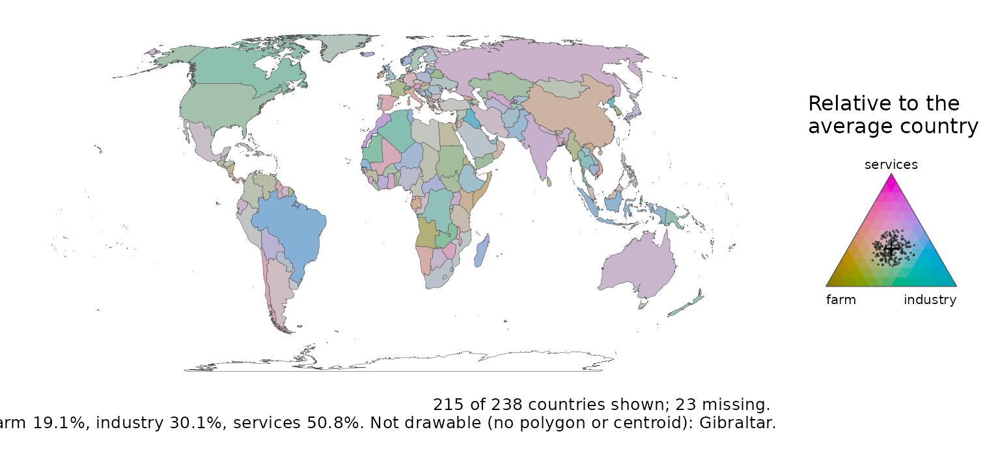
Symbols, flows and grids
bubble_map(snap, population)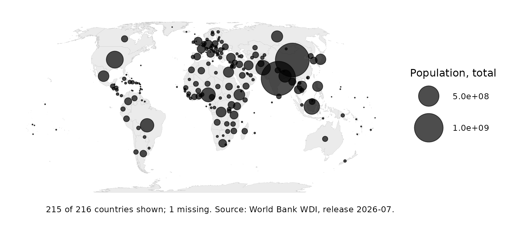
spike_map(snap, population)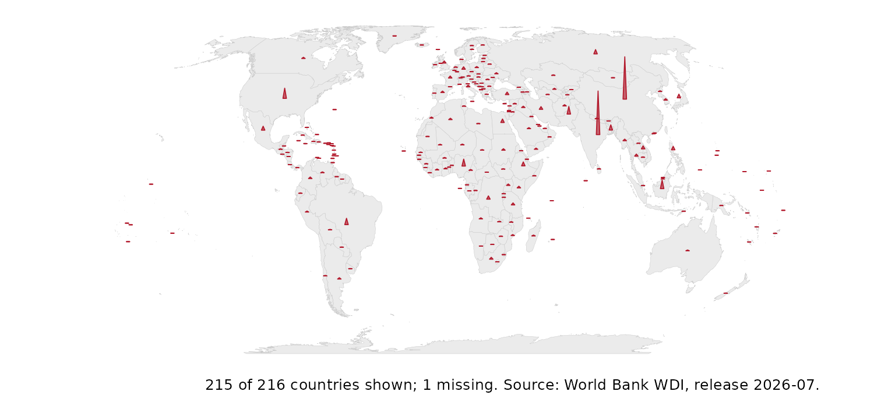
corridors <- data.frame(
from = c("Brazil", "Nigeria", "South Africa", "Kenya", "Indonesia", "Peru"),
to = c("Portugal", "United Kingdom", "United Kingdom", "United Kingdom",
"Saudi Arabia", "Spain"),
people = c(1.4, 2.1, 2.6, 1.7, 1.8, 1.2))
flow_map(corridors, from, to, people)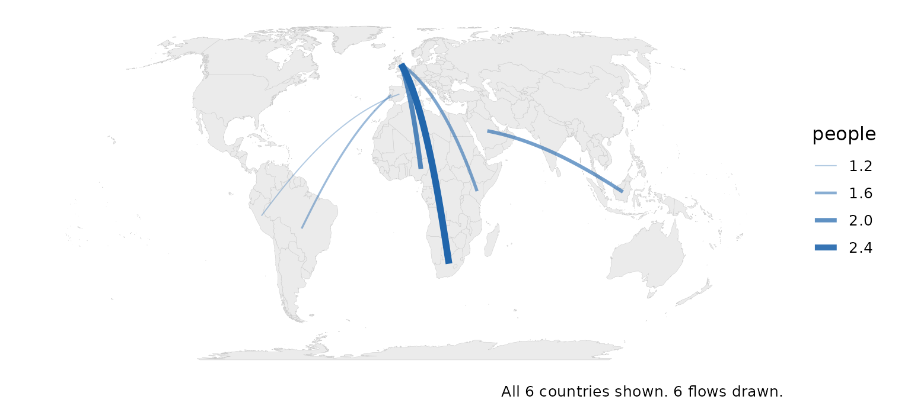
tile_map(snap, gdp_per_capita)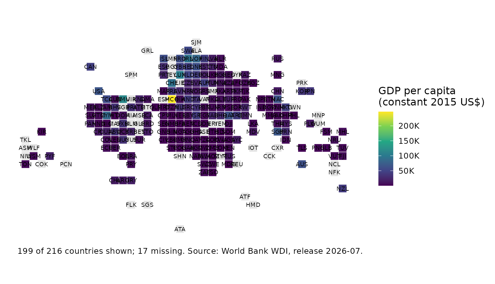
gridded_cartogram(snap, population, cells = 600)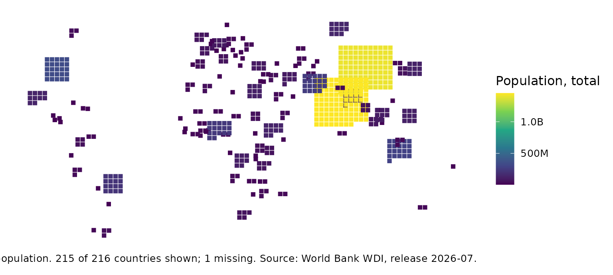
Honest maps
value_by_alpha_map(poly, gdp_per_capita, population)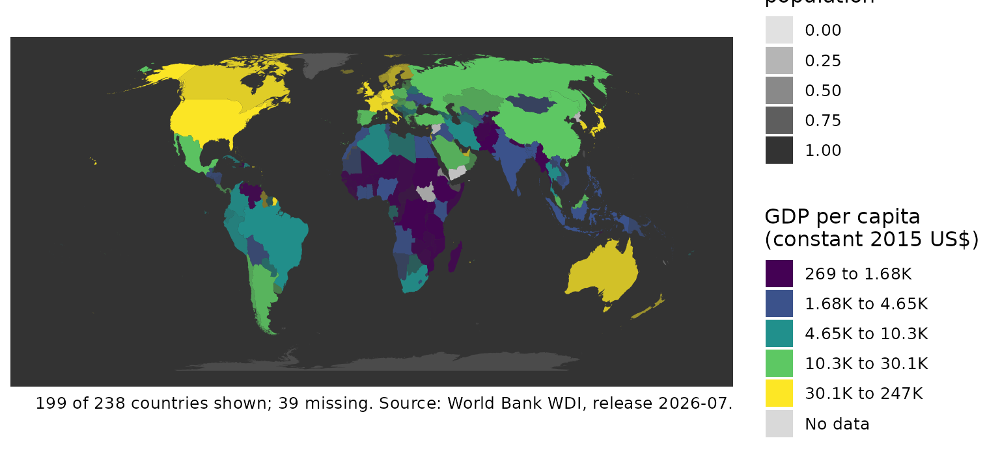
coverage_map(poly, co2_per_capita)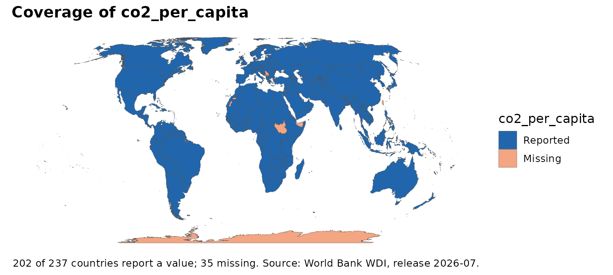
classify_compare(poly, gdp_per_capita, ncol = 3)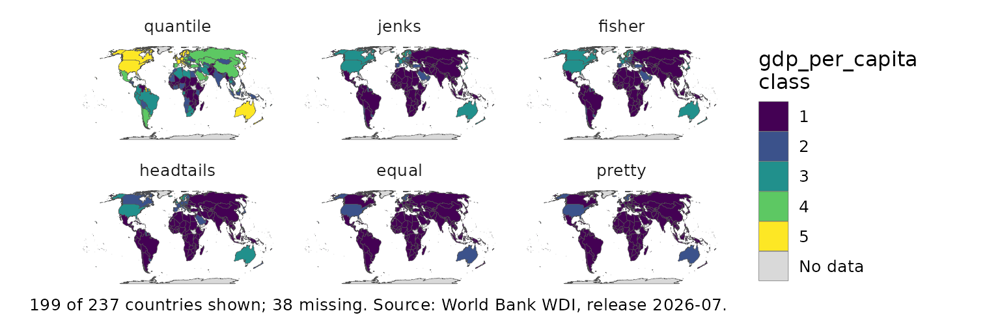
Globes and cartograms
globe_map(sfd, income, lon = 20, lat = 10)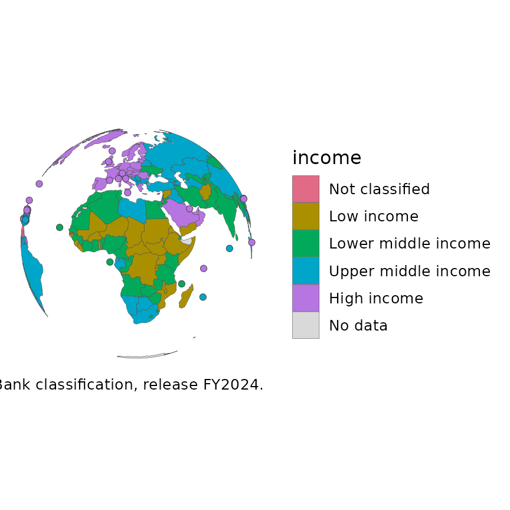
dorling_map(sfd, population)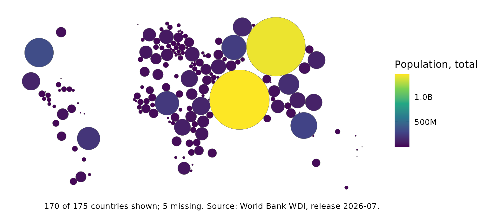
if (requireNamespace("biscale", quietly = TRUE)) {
bivariate_map(sfd, gdp_per_capita, life_expectancy)
}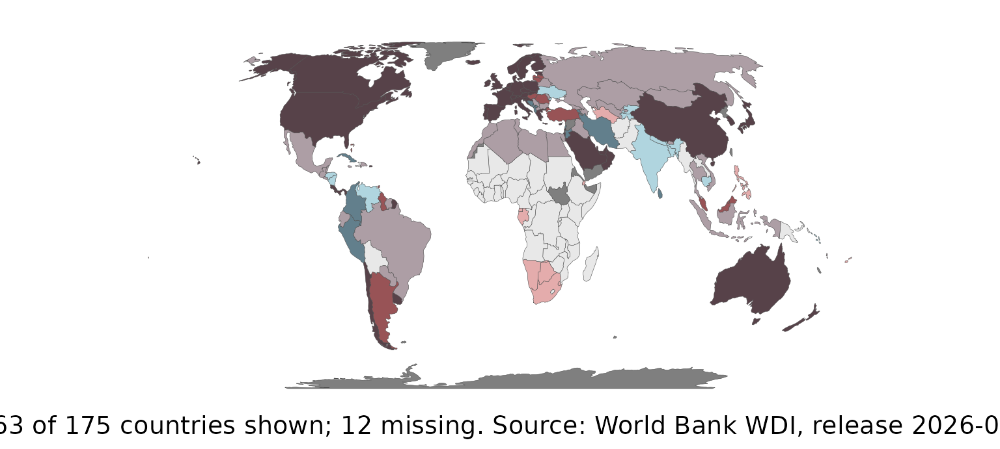
Over time
set.seed(1)
pan <- expand.grid(iso3c = world_tiles$iso3c, year = 2000:2020,
stringsAsFactors = FALSE)
pan$v <- stats::ave(stats::rnorm(nrow(pan)), pan$iso3c, FUN = cumsum)
tile_trend_map(pan, v, label = FALSE)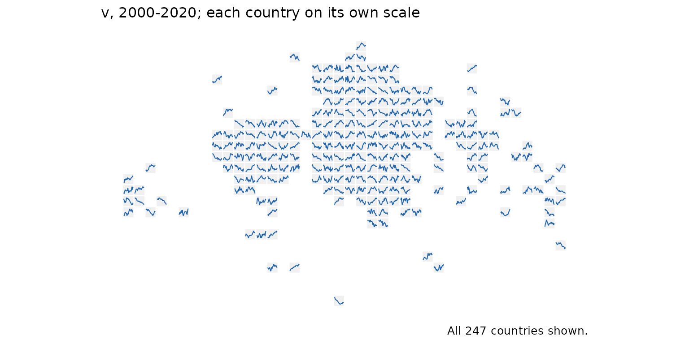